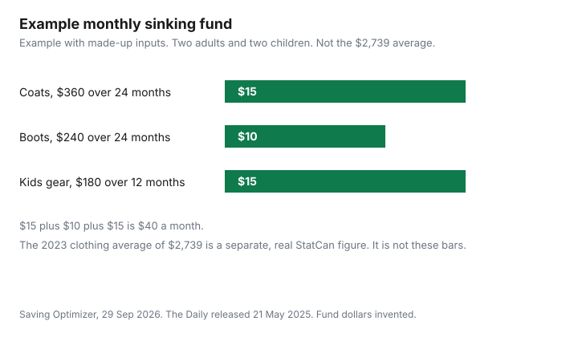

Clothing · Canada
How Much Should a Canadian Household Spend on Clothing? A Realistic Monthly Budget
A clothing budget fails when it is a percent someone repeated and a receipt nobody recorded. Statistics Canada's The Daily, released 21 May 2025, reported the 2023 Survey of Household Spending. Canadian households spent an average of $76,750 on goods and services. In that release, households spent an average of $2,739 on clothing and accessories, up 18.9 percent from 2021, and still below the pre-pandemic level of 2019. The survey table is 11-10-0222-01, Household spending, Canada, regions and provinces. The $2,739 figure is from The Daily's write-up of that survey, not from a cell downloaded out of the table viewer. It is an average, not a target, and it is not a per-person or per-child number. What you should spend is the fund you set. The chart is an example with made-up inputs. Work clothes and the CRA are a different question: work-clothes deductions.
Key takeaways
- The Daily, 21 May 2025: average household spending on clothing and accessories was $2,739 in 2023, up 18.9 percent from 2021. Average spending on all goods and services was $76,750.
- 2,739 divided by 76,750 is about 3.6 percent of that goods-and-services average.
- A fixed dollar you choose, reviewed twice a year, is easier to run than a percent of a paycheque that changes. Neither figure is a rule from the survey.
- Coats and boots are irregular. A sinking fund spreads them. The monthly amounts in the second table are made up.
- Track the category in the same place as the rest of the plan. Cutting the line means fewer new pieces and longer wear, not a shabby uniform you did not choose.
What Statistics Canada household spending data says
The 2023 Survey of Household Spending was released in The Daily on 21 May 2025. Average annual spending on goods and services was $76,750 per household, up 14.3 percent from 2021.
Shelter, transportation, and food were the three largest shares of consumption in that release: 32.1 percent, 15.8 percent, and 15.7 percent. Clothing is smaller. The clothing sentence is specific: in 2023, households spent an average of $2,739 on clothing and accessories, up 18.9 percent from 2021, and the average remained below the 2019 level. This page does not reverse-engineer them. Rounding would make a fake precision.
The same release says total current consumption includes clothing and accessories along with food, shelter, household operations, furnishings, transportation, health care, personal care, and other categories. The survey collected from 9,991 households in the provinces and 732 households in the territorial capitals, from January to December 2023. Table 11-10-0222-01 is the household-spending table for Canada, regions, and provinces, formerly CANSIM 203-0021. The catalogue page for that table was confirmed. The dollar used here is the one The Daily printed. If you need a province, open the table and read the cell. This guide does not include provincial clothing rows, so none are stated. Alberta's $88,186, British Columbia's $82,657, and Ontario's $81,975 in that release are average spending on all goods and services, not on clothing.
Percent of income vs fixed-dollar approaches
A percent of income sounds portable and usually is not, because the survey figure above is not income. It is spending.
About 3.6 percent is 2,739 divided by 76,750, the two averages in the same release. Say that sentence in full if you quote it. Do not shorten it to 3.6 percent of income. The Daily did not publish a recommended share of pay for clothes, and this page will not supply one. A fixed dollar is the amount you move to the clothing line each month, chosen from what you have actually spent and what you are willing to spend. The 50/30/20 guide is one way to split a paycheque after you have adjusted for your city. Clothing sits inside whatever slice you assign to wants or to needs. The guide does not isolate a clothing percent, and neither does this one. The zero-based budgeting guide gives every dollar a line, which is where a clothing line belongs if you want it visible.
Adults vs kids vs seasonal big-ticket items
The $2,739 average mixes adults, children, and accessories. It is a poor per-child target.
Kids' sizes, the Ontario rebate, and what to buy new are in the kids' clothing guide. A September list is the back-to-school guide. Seasonal big-ticket items are coats and boots that you do not buy every month. If you leave them inside the monthly clothing number, the month you buy them looks like a failure. Pull them into a sinking fund, below. Groceries are the larger bill for many households: family grocery budgeting. Do not shrink the food line to dress the clothing line without writing both numbers down.
Sinking funds for coats and boots
A sinking fund is money set aside for a bill you can see coming. Property tax and insurance are the long version in the sinking-fund guide.
Coats and boots are the short version. Divide the price you expect to pay by the number of months until you will pay it. Example with made-up inputs. A household of two adults and two children sets aside a coat replacement of $360 over 24 months, which is $15 a month, boot replacement of $240 over 24 months, which is $10 a month, and kids' gear of $180 over 12 months, which is $15 a month. The monthly total is $40. Replace them with quotes you collect. If the coat you actually need is more, the monthly amount rises. If you still have a sound coat, the fund can wait. The point is that the month of the purchase is not the first time the category appears.
Tracking tips
Use one category called clothing, and a second called coats and boots if you split the fund. Record the date, the amount, and who it was for.
A child's shoes and an adult's coat should not hide in the same note if you are trying to see which one creeps. Subscriptions that are not clothing should stay out of the line. The subscription cap is that other leak. Review the clothing total when you review the rest of the plan, not only when a receipt surprises you. If you use a portal or a gift card, record what you paid, not the pre-discount sticker, or the category will look worse than the cash that left.
Cutting without looking shabby
Cutting the line means buying fewer new pieces, keeping the ones that fit, and repairing the ones that are one button away from fine. It does not mean a rule about logos.
The thrift test and the care habits are the Value Village guide and the garment-care guide. A work wardrobe is still mostly not a tax deduction for employees, which the work-clothes guide quotes from T4044. Appearances follow fit and cleanliness more than they follow a new purchase every month. If the $2,739 average is far above what you spend, you do not have to spend up to it. If you are far above it because of a coat year, the sinking fund is the comparison, not the average.
| Figure | Amount | What it is |
|---|---|---|
| Goods and services, average household | $76,750 | 2023. Up 14.3 percent from 2021. Not income. |
| Clothing and accessories, average household | $2,739 | 2023. Up 18.9 percent from 2021. Below the 2019 level. |
| Clothing as a share of the goods-and-services average | About 3.6 percent | 2,739 divided by 76,750. Not a share of income. Not a recommended budget. |
| Sample | 9,991 and 732 | Households in the provinces, and households in the territorial capitals, surveyed January to December 2023. |
| Item | Made-up amount | Months | Per month |
|---|---|---|---|
| Two adult coats | $360 | 24 | $15 |
| Two pairs of boots | $240 | 24 | $10 |
| Kids' gear | $180 | 12 | $15 |
| Monthly total | $40 |

Sources
- Statistics Canada, The Daily, Survey of Household Spending, 2023, released 21 May 2025, www150.statcan.gc.ca, as of 29 Sep 2026. Average goods and services $76,750. Clothing and accessories $2,739, up 18.9 percent from 2021, below 2019. Sample sizes as quoted. Provincial totals cited are for all goods and services, not clothing.
- Statistics Canada table 11-10-0222-01, Household spending, Canada, regions and provinces, catalogue page confirmed. The clothing dollar in this guide is The Daily's figure, not an exported table cell.
Frequently asked questions
How much does the average Canadian household spend on clothing?
The Daily, released 21 May 2025, said households spent an average of $2,739 on clothing and accessories in 2023, up 18.9 percent from 2021. That is from the Survey of Household Spending, table 11-10-0222-01. Your budget does not have to match it.
What percent of income should go to clothes?
No recommended percent of income was in The Daily passage as of 29 Sep 2026. The $2,739 clothing average divided by the $76,750 goods-and-services average is about 3.6 percent of spending, not of income. Use a fixed dollar you can fund, or a percent you choose inside your own plan. The 50/30/20 guide does not isolate clothing.
How do I budget for winter coats and boots?
Divide the price you expect by the months until you will buy. The example is made up: $360 of coats over 24 months is $15 a month, $240 of boots over 24 months is $10, and $180 of kids' gear over 12 months is $15. The total is $40 a month. Replace the prices with quotes. The sinking-fund guide covers the same method for tax and insurance.
How do I track clothing spending?
Give clothing its own line, and a second line for coats and boots if those are irregular. Write the date, the amount you actually paid, and who it was for. Keep subscriptions out of the clothing line. Review it when you review the rest of the budget, which the zero-based guide sets up as a full assignment of dollars.
How can I spend less on clothes without looking shabby?
Buy fewer new pieces, keep what fits, and repair what is one stitch away from wearable. The thrift guide is the condition test, and the care guide is how washing and drying shorten or extend that life. The $2,739 average is not a minimum you must hit. An employee deduction for ordinary work clothes is not the discount. T4044 says most clothing is not deductible.
Researched and drafted with AI assistance and fact-checked against official Canadian sources. How we create content.